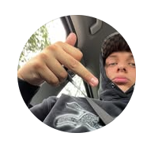

Übergang Schule → Beruf · März 2026
| # | Hochschule & Studiengang | Typ | Kosten | Frist |
|---|---|---|---|---|
| 1 | Popakademie Mannheim Musikbusiness (B.A.) — 6 Sem. | 30 Plätze |
Staatlich | Kostenlos | 30. April! |
| 2 | UdK Berlin Gesellschafts- & Wirtschaftskommunikation (B.A.) — 6 Sem. |
Staatlich | Kostenlos | Abgelaufen |
| 3 | Uni Paderborn Populäre Musik und Medien (B.A.) — 6 Sem. | Zulassungsfrei |
Staatlich | ~300 EUR/Sem. | Eignungstest bis 13. Juli |
| 4 | HMTM Hannover / IJK Kommunikationswiss. — Spezialisierung Medien, Musik & Entertainment — 6 Sem. |
Staatlich | Kostenlos | 15. Juni |
| 5 | HdM Stuttgart Social Media Marketing & Management (B.A.) — 7 Sem. | 20 Plätze |
Staatlich | ~250 EUR/Sem. | 15. Juli |
| 6 | SRH Berlin / SOPA Management der Kreativwirtschaft — Event- & Musikmanagement (B.A.) — 7 Sem. |
Privat | 650 EUR/Mo. | Laufend |
| 7 | BIMM Berlin Music Business (BA Hons) — 6 Sem. | Englisch | 4× Billboard ranked |
Privat | ~8.450 EUR/Jahr | Laufend |
| 8 | Leuphana Lüneburg Kulturwissenschaften (B.A.) + Minor Popular Music Studies — 6 Sem. |
Staatlich | ~370 EUR/Sem. | 15. Juli |
| 9 | Macromedia Musikmanagement (B.A.) — 7 Sem. | Simon kennt's |
Privat | ~779 EUR/Mo. | Laufend |
| 10 | HS Mittweida Medienmanagement (B.A.) — breit aufgestellt, solider Fallback |
Staatlich | Kostenlos | 15. Juli |
| Hochschule | Frist | Status |
|---|---|---|
| UdK Berlin — GWK | 1. April 2026 | Abgelaufen — WiSe 2027 |
| Popakademie Mannheim | 30. April 2026 | Sofort prüfen! |
| HMTM Hannover / IJK | 15. Juni 2026 | Bewerben |
| Uni Paderborn — Eignungstest | 1. Juni – 13. Juli 2026 | Anmeldung per Mail |
| HdM Stuttgart | 15. Juli 2026 | Bewerben |
| Leuphana Lüneburg | 15. Juli 2026 | Bewerben |
| HS Mittweida | 15. Juli 2026 | Fallback |
| SRH Berlin / SOPA | Laufend | Privat · Backup |
| BIMM Berlin | Laufend | Privat · Backup |
| Macromedia | Laufend | Privat · Backup |